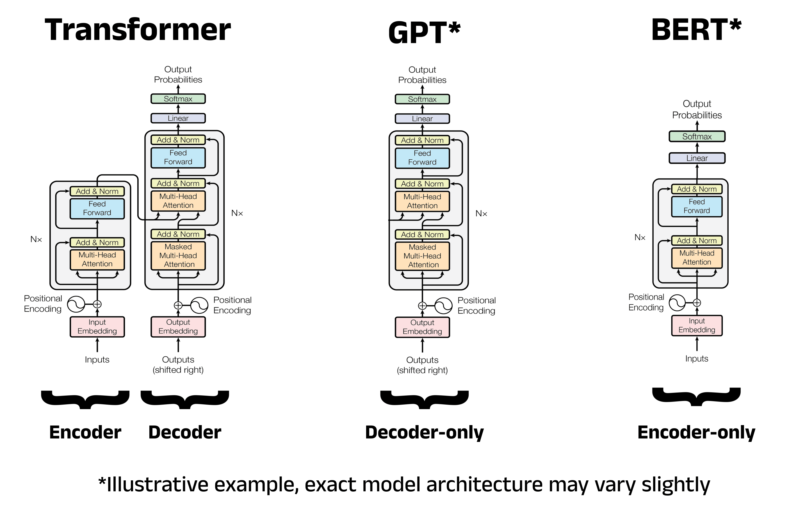

The 🤗 Transformers library provides tools to create and use shared models.
Model Hub:
Pipeline() function:
Three main steps in a pipeline:
Available pipelines:
import os
hf_token = "your-key"
custom_cache_dir = '/Users/peltouz/Documents/pretrain'
os.environ['HF_HOME'] = custom_cache_dir # Hugging Face home directory for all HF operations
os.environ['TRANSFORMERS_CACHE'] = custom_cache_dir # Transformers-specific cache directory
os.environ['HF_DATASETS_CACHE'] = custom_cache_dir # Datasets-specific cache directory
os.environ['HF_METRICS_CACHE'] = custom_cache_dir # Metrics-specific cache directory
os.environ['HF_TOKEN'] = hf_token # Hugging Face API tokenThis Python code snippet configures the environment to specify custom cache directories for operations involving Hugging Face libraries, and it sets an API token for authentication.
hf_token: Assigned to a string representing the Hugging
Face API token.custom_cache_dir: Set to D:/pretrain.HF_HOME: Specifies the base directory for all Hugging
Face-related operations.TRANSFORMERS_CACHE: Directory for caching models
downloaded via the transformers library.HF_DATASETS_CACHE: Directory for caching datasets
accessed via the datasets library.HF_METRICS_CACHE: Directory for caching metrics-related
files used in model evaluation.HF_TOKEN: Environment variable for the Hugging Face API
token to authenticate requests to Hugging Face services.D:/pretrain).
from transformers import pipeline
classifier = pipeline("sentiment-analysis")
sentiments = classifier(
["I hate teaching",
"I love programming"]
)
print(sentiments)
## [{'label': 'NEGATIVE', 'score': 0.9989008903503418}, {'label': 'POSITIVE', 'score': 0.9998173117637634}]
sentiments[0]['label']
## 'NEGATIVE'
classifier = pipeline("zero-shot-classification")
classifier(
"df %>% filter(!is.na(var1))",
candidate_labels=["python", "Rstudio"],
)
## {'sequence': 'df %>% filter(!is.na(var1))', 'labels': ['Rstudio', 'python'], 'scores': [0.6543467044830322, 0.345653235912323]}
generator = pipeline("text-generation")
generator("In my programming course in DS2E I will")
## [{'generated_text': 'In my programming course in DS2E I will always focus on the basics of programming and how to make use of the new features of 3D technology in a way that makes sense for an undergraduate.\n\nIf you are looking for the best 3D software, then you will find it here. If you are looking for the best 3D software, then you will find it here.\n\nYou can find the first post of my blog here.\n\nAdvertisements'}]
unmasker = pipeline("fill-mask")
unmasker("This course will teach you all about <mask> models.", top_k=2)
## [{'score': 0.19620011746883392, 'token': 30412, 'token_str': ' mathematical', 'sequence': 'This course will teach you all about mathematical models.'}, {'score': 0.04052743315696716, 'token': 38163, 'token_str': ' computational', 'sequence': 'This course will teach you all about computational models.'}]
ner = pipeline("ner", grouped_entities=True)
## /Users/peltouz/Documents/GitHub/M2-Py-DS2E/hf/lib/python3.13/site-packages/transformers/pipelines/token_classification.py:186: UserWarning: `grouped_entities` is deprecated and will be removed in version v5.0.0, defaulted to `aggregation_strategy="AggregationStrategy.SIMPLE"` instead.
## warnings.warn(
ner("My name is Pierre and I work at BETA in Strasbourg.")
## [{'entity_group': 'PER', 'score': np.float32(0.99918455), 'word': 'Pierre', 'start': 11, 'end': 17}, {'entity_group': 'ORG', 'score': np.float32(0.9977419), 'word': 'BETA', 'start': 32, 'end': 36}, {'entity_group': 'LOC', 'score': np.float32(0.9894748), 'word': 'Strasbourg', 'start': 40, 'end': 50}]
question_answerer = pipeline("question-answering")
question_answerer(
question="Where do I work?",
context="My name is Pierre and I work at BETA in Strasbourg.",
)
## {'score': 0.5033916071697604, 'start': 32, 'end': 36, 'answer': 'BETA'}The question-answering pipeline answers questions using information from a given context:
summarizer = pipeline("summarization")
summarizer(
"""This paper offers insights into the diffusion and impact of artificial intelligence in science.
More specifically, we show that neural network-based technology meets the essential properties of emerging technologies in the scientific realm.
It is novel, because it shows discontinuous innovations in the originating domain and is put to new uses in many application domains;
it is quick growing, its dimensions being subject to rapid change; it is coherent, because it detaches from its technological parents, and integrates and is accepted in different scientific communities;
and it has a prominent impact on scientific discovery, but a high degree of uncertainty and ambiguity associated with this impact.
Our findings suggest that intelligent machines diffuse in the sciences, reshape the nature of the discovery process and affect the organization of science.
We propose a new conceptual framework that considers artificial intelligence as an emerging general method of invention and, on this basis, derive its policy implications."""
)
## [{'summary_text': ' Neural network-based technology meets the essential properties of emerging technologies in the scientific realm . It is novel, because it shows discontinuous innovations in the originating domain and is put to new uses in many application domains . Researchers propose a new conceptual framework that considers artificial intelligence as an emerging general method of invention .'}]Summarization is the task of reducing a text into a shorter text while keeping all (or most) of the important aspects referenced in the text. Here’s an example:
See this Warning message: “Using a pipeline without specifying a model name and revision in production is not recommended.”
generator = pipeline("text-generation", model="distilgpt2")
generator(
"In my programming course in DS2E I will",
max_length=30,
num_return_sequences=3,
)
## [{'generated_text': 'In my programming course in DS2E I will see whether I can use my own language in the IDE.\n\n\nI will see if I can use my own language in the IDE.\nI will see if I can use my own language in the IDE.\nI will see if I can use my own language in the IDE.\nI will see if I can use my own language in the IDE.\nI will see if I can use your own language in the IDE.\nI will see if I can use your own language in the IDE.\nI will see if I can use your own language in the IDE.\nI will see if I can use your own language in the IDE.\nI will see if I can use your own language in the IDE.\nI will see if I can use your own language in the IDE.\nI will see if I can use your own language in the IDE.\nI will see if I can use your own language in the IDE.\nI will see if I can use your own language in the IDE.\nI will see if I can use your own language in the IDE.\nI will see if I can use your own language in the IDE.\nI will see if I can use your own language in the IDE.\nI'}, {'generated_text': "In my programming course in DS2E I will present a simple way to get the code into the environment. This is a simple way to get the code to the environment. This is a simple way to get the code into the environment. This is a simple way to get the code to the environment. This is a simple way to get the code to the environment. This is a simple way to get the code to the environment.\n\n\n\n\n\nThe first thing you'll need to do is to type in the following command:\nnpm install composer-plugin\nThe second thing you will need to do is to type in the following command:\nnpm install composer-plugin\nThe third thing you will need to do is to type in the following command:\nnpm install composer-plugin\nThe fourth thing you will need to do is to type in the following command:\nnpm install composer-plugin\nThe fourth thing you will need to do is to type in the following command:\nnpm install composer-plugin\nThe fifth thing you will need to do is to type in the following command:\nnpm install composer-plugin\nThe fourth thing you will need to do is to type in the following command:\nnpm install composer-plugin\nThe fifth thing you will"}, {'generated_text': 'In my programming course in DS2E I will be using Python 2.7. This will focus on using Python 2.7. The following code is intended to provide an alternative to Python 2.7.\n\n\nPython 2.7. The Python 2.7.\nThe Python 2.7.\nPipeline\npython2.7\nPython 2.7.\nPython 2.7.\nPython 2.7.\nPython 2.7.\nPython 2.7.\nPython 2.7.\nPython 2.7.\nPython 2.7.\nPython 2.7.\nPython 2.7.\nPython 2.7.\nPython 2.7.\npython2.7\nPython 2.7.\nPython 2.7.\nPython 2.7.\nPython 2.7.\nPython 2.7.\nPython 2.7.\npython2.7\nPython 2.7.\nPython 2.7.\npython2.7\nPython 2.7.\nPython 2.7.\nPython 2.7.\nPython 2.7.\nPython 2.7.\npython2.7\nPython 2.7.\nPython 2.7.\nPython 2.7.\nPython 2.7.'}]translator = pipeline("translation", model="Helsinki-NLP/opus-mt-fr-en")
translator("Ce cours est produit par Hugging Face.")
## [{'translation_text': 'This course is produced by Hugging Face.'}]For translation, you can use a default model if you provide a language pair in the task name (such as “translation_en_to_fr”), but the easiest way is to pick the model you want to use on the Model Hub.
Here we’ll try translating from French to English:

Attention layers are integral to the Transformer architecture. The paper introducing the Transformer was titled “Attention Is All You Need,” highlighting the importance of attention layers.
Function of attention layers: These layers direct the model to focus on specific words in a sentence, while downplaying the importance of others.
Contextual meaning: The meaning of a word depends not only on the word itself but also on its context, which includes other words around it.
The Transformer architecture was initially designed for translation.
Decoder models use only the decoder part of a Transformer model.
Attention mechanism: At each stage, the attention layers can only access the words that are positioned before the current word in the sentence.
These models are often referred to as auto-regressive models.
Pretraining: Typically focuses on predicting the next word in a sentence.
Best suited for: Tasks involving text generation.
Examples of decoder models:
Step 1: Input Embedding Converts words into numerical vectors:
Text: "The cat eats"
↓
Tokens: [The] [cat] [eats]
↓
Each becomes a dense vector (e.g., 768 numbers)
[The] → [0.23, -0.45, 0.67, ..., 0.12]Step 2: Positional Encoding Adds position information since transformers don’t inherently understand word order:
Position 0: Gets encoding vector
Position 1: Gets different encoding vector
Position 2: Gets another different encoding vector
Final = Word Embedding + Position EncodingStep 3: Transformer Block (repeated N times)
3.1 - Masked Multi-Head Attention
The Causal Mask:
When processing "eats" at position 2:
Can see: [The] [cat] [eats]
Cannot see: [the] [mouse] (future tokens)
Attention mask matrix:
The cat eats the mouse
The [ ✓ ✗ ✗ ✗ ✗ ]
cat [ ✓ ✓ ✗ ✗ ✗ ]
eats [ ✓ ✓ ✓ ✗ ✗ ]
the [ ✓ ✓ ✓ ✓ ✗ ]
mouse [ ✓ ✓ ✓ ✓ ✓ ]
(✓ = can see, ✗ = blocked)Why “Multi-Head”? Having multiple attention heads (e.g., 12) allows the model to focus on different aspects simultaneously: - Head 1: Subject-verb relationships - Head 2: Semantic meaning - Head 3: Long-range dependencies - etc.
3.2 - Add & Norm Two important techniques: - Residual Connection: Adds the input back to the output (prevents information loss in deep networks) - Layer Normalization: Stabilizes the numbers to prevent them from getting too large or small
Think of it as: “Keep the original information and just add the new insights”
3.3 - Feed Forward Network A simple neural network applied to each position independently: - Expands the representation (768 → 3072 dimensions) - Applies non-linear transformation - Compresses back (3072 → 768 dimensions)
This allows the model to process the attended information and extract higher-level features.
Step 4: Stacking Layers
These blocks repeat many times: - GPT-2: 12-48 layers - GPT-3: 96 layers
Each layer refines understanding: - Early layers:
Grammar, syntax, word relationships - Middle layers:
Meaning, context, semantic relationships
- Late layers: Abstract reasoning, global context
Step 5: Output Prediction
The final layer produces probabilities for the next word:
Current text: "The cat eats"
Probability for next word:
[the] : 0.001
[a] : 0.089
[fish] : 0.156
[mice] : 0.234 ← Most likely
[quickly]: 0.078
...
Encoder models use only the encoder part of a Transformer model.
Attention mechanism: At each stage, the attention layers can access all the words in the sentence.
These models are characterized by bi-directional attention and are often referred to as auto-encoding models. Processes text bidirectionally - can see both past and future words. Designed for understanding, not generation.
Pretraining: Typically involves corrupting a sentence (e.g., by masking random words) and tasking the model with reconstructing the original sentence.
Best suited for: Tasks requiring a full understanding of the sentence, such as:
Examples of encoder models:
Step 1: Input Embedding Similar to GPT, but adds special tokens:
Text: "The cat eats the mouse"
↓
Tokens: [CLS] [The] [cat] [eats] [the] [mouse] [SEP]
[CLS] = Classification token (for sentence-level tasks)
[SEP] = Separator (for sentence pairs)Step 2: Positional Encoding Same as GPT - adds position information.
Step 3: Transformer Block
3.1 - Multi-Head Attention (NO MASK)
KEY DIFFERENCE: Bidirectional attention
When processing "cat" at position 2:
Can see: [CLS] [The] [cat] [eats] [the] [mouse] [SEP]
↑ ↑ ↑ ↑ ↑ ↑ ↑
ALL tokens visible (past AND future)
Attention matrix (no masking):
CLS The cat eats the mouse SEP
CLS [ ✓ ✓ ✓ ✓ ✓ ✓ ✓ ]
The [ ✓ ✓ ✓ ✓ ✓ ✓ ✓ ]
cat [ ✓ ✓ ✓ ✓ ✓ ✓ ✓ ] ← Can see everything!
eats [ ✓ ✓ ✓ ✓ ✓ ✓ ✓ ]
the [ ✓ ✓ ✓ ✓ ✓ ✓ ✓ ]
mouse [ ✓ ✓ ✓ ✓ ✓ ✓ ✓ ]
SEP [ ✓ ✓ ✓ ✓ ✓ ✓ ✓ ]Example attention for “eats”:
Can attend to:
- "cat" (subject before): 0.35
- "mouse" (object after): 0.40 ← Can see future!
- "the" (determiner after): 0.15
- others: 0.10The model understands full context from both directions, making it better at understanding what words mean in context.
3.2 - Add & Norm Same as GPT - residual connections and normalization.
3.3 - Feed Forward Same as GPT - expand, transform, compress.
Step 4: Stacking Layers - BERT-base: 12 layers - BERT-large: 24 layers
Each layer builds deeper understanding of the full sentence context.
Step 5: Task-Specific Output
No autoregressive generation!
BERT produces a rich representation for each token:
[CLS] → vector ← Used for sentence classification
[The] → vector ← Used for word-level tasks
[cat] → vector ← Used for named entity recognition
[eats] → vector
...
Encoder-decoder models (also known as sequence-to-sequence models) use both parts of the Transformer architecture.
Attention mechanism:
Best suited for: Tasks that involve generating new sentences based on a given input, such as:
Examples of encoder-decoder models:
Pretrained and fine-tuned models are powerful tools, but they have limitations.
The main limitation stems from the nature of pretraining on large datasets.
An example is provided with a fill-mask pipeline using the BERT model.
unmasker = pipeline("fill-mask", model="bert-base-uncased")
result = unmasker("This man works as a [MASK].")
print([r["token_str"] for r in result])
## ['carpenter', 'lawyer', 'farmer', 'businessman', 'doctor']
result = unmasker("This woman works as a [MASK].")
print([r["token_str"] for r in result])
## ['nurse', 'maid', 'teacher', 'waitress', 'prostitute']
from transformers import pipeline
classifier = pipeline("sentiment-analysis")
sentiments = classifier(
["I hate teaching",
"I love programming"]
)
sentiments
## [{'label': 'NEGATIVE', 'score': 0.9989008903503418}, {'label': 'POSITIVE', 'score': 0.9998173117637634}]this pipeline groups together three steps:
preprocessing, passing the inputs through the model, and
postprocessing:
from transformers import AutoTokenizer
checkpoint = "distilbert-base-uncased-finetuned-sst-2-english"
tokenizer = AutoTokenizer.from_pretrained(checkpoint)Transformer models can’t process raw text directly.
The first step is to convert text inputs into numbers using a tokenizer.
The tokenizer is responsible for:
Preprocessing must be consistent with how the model was pretrained.
AutoTokenizer class and its from_pretrained() method help fetch and cache the tokenizer information.
from transformers import AutoTokenizer
checkpoint = "distilbert-base-uncased-finetuned-sst-2-english"
tokenizer = AutoTokenizer.from_pretrained(checkpoint)The default checkpoint for the sentiment-analysis pipeline is distilbert-base-uncased-finetuned-sst-2-english.
🤗 Transformers can be used without concern for the underlying ML framework (PyTorch, TensorFlow, or Flax).
Transformer models require tensors as input.
Tensors are similar to NumPy arrays, which can have:
Other ML frameworks’ tensors behave similarly to NumPy arrays and are easy to instantiate.
raw_inputs = [
"I hate teaching",
"I love programming",
]
inputs = tokenizer(raw_inputs, padding=True, truncation=True, return_tensors="pt") # Here pytorch
inputs
## {'input_ids': tensor([[ 101, 1045, 5223, 4252, 102],
## [ 101, 1045, 2293, 4730, 102]]), 'attention_mask': tensor([[1, 1, 1, 1, 1],
## [1, 1, 1, 1, 1]])}input_ids and
attention_mask.input_ids: Two rows of integers, one for each sentence,
representing the unique identifiers of the tokens.attention_mask: A tensor with the same shape as the
input_ids, filled with 0s and 1s, where:
[PAD]).
tokenized_text = "tokenize the text into words by applying Python’s split() function".split()
tokenized_text
## ['tokenize', 'the', 'text', 'into', 'words', 'by', 'applying', 'Python’s', 'split()', 'function']Simple and easy to set up with few rules.
Yields decent results for many applications.
Goal:
Text Splitting Methods:
split() function can be used for this
purpose.tokenized_text = "tokenize the text into words by applying Python’s split() function".split()
tokenized_text
## ['tokenize', 'the', 'text', 'into', 'words', 'by', 'applying', 'Python’s', 'split()', 'function']Word tokenizers can include extra rules for punctuation.
These tokenizers create vocabularies, defined by the total number of independent tokens in the corpus.
Each word in the corpus is assigned a unique ID, starting from 0, which the model uses to identify each word.
A comprehensive word-based tokenizer needs an identifier for every word in a language, leading to a large number of tokens.
Tokenizers include an “unknown” token (often [UNK]
or <unk>) for words not in the vocabulary.
If many unknown tokens are produced, it indicates that the tokenizer is struggling to represent words accurately, losing information.
Character-based tokenization splits text into characters rather than words.
Primary benefits: - Smaller vocabulary. - Fewer out-of-vocabulary (unknown) tokens, as every word can be constructed from characters.
Challenges: - Handling spaces and punctuation can raise issues.
Drawbacks: - Representation may be less meaningful since individual characters carry less information compared to words. - This varies across languages (e.g., Chinese characters hold more information than characters in Latin languages). - It produces a larger number of tokens to process. A word that is a single token in word-based tokenization may become 10+ tokens in character-based tokenization.
Subword tokenization offers a compromise, combining word-based and character-based approaches.
Let's</w> do</w> token ization</w> !</w>tokenizer.save_pretrained("/Users/peltouz/Documents/pretrain/test")
## ('/Users/peltouz/Documents/pretrain/test/tokenizer_config.json', '/Users/peltouz/Documents/pretrain/test/special_tokens_map.json', '/Users/peltouz/Documents/pretrain/test/vocab.txt', '/Users/peltouz/Documents/pretrain/test/added_tokens.json', '/Users/peltouz/Documents/pretrain/test/tokenizer.json')Loading and saving tokenizers is similar to handling models.
It uses the same two methods: from_pretrained() and
save_pretrained().
These methods load or save:
tokenizer.save_pretrained("/Users/peltouz/Documents/pretrain/test")
## ('/Users/peltouz/Documents/pretrain/test/tokenizer_config.json', '/Users/peltouz/Documents/pretrain/test/special_tokens_map.json', '/Users/peltouz/Documents/pretrain/test/vocab.txt', '/Users/peltouz/Documents/pretrain/test/added_tokens.json', '/Users/peltouz/Documents/pretrain/test/tokenizer.json')
from transformers import AutoModel
checkpoint = "distilbert-base-uncased-finetuned-sst-2-english"
model = AutoModel.from_pretrained(checkpoint)from transformers import AutoModel
checkpoint = “distilbert-base-uncased-finetuned-sst-2-english” model = AutoModel.from_pretrained(checkpoint)
outputs = model(**inputs)
print(outputs.last_hidden_state.shape)
## torch.Size([2, 5, 768])The outputs of 🤗 Transformers models resemble namedtuples or dictionaries.
You can access elements in different ways:
outputs.last_hidden_state)outputs["last_hidden_state"])outputs[0])
Take high-dimensional vectors of hidden states as input.
Project these onto a different dimension.
Usually composed of one or a few linear layers.
Transformers and Model Heads:
Available Architectures in 🤗 Transformers:
For example for sentence classification tasks, use
AutoModelForSequenceClassification instead of
AutoModel.
from transformers import AutoModelForSequenceClassification
checkpoint = "distilbert-base-uncased-finetuned-sst-2-english"
model = AutoModelForSequenceClassification.from_pretrained(checkpoint)
outputs = model(**inputs)The model head reduces dimensionality by taking high-dimensional vectors as input.
It outputs vectors containing two values, one for each label.
Since there are two sentences and two labels, the resulting output has a shape of 2 x 2.
print(outputs.logits.shape)
## torch.Size([2, 2])
print(outputs.logits)
## tensor([[ 3.7257, -3.0865],
## [-4.1563, 4.4512]], grad_fn=<AddmmBackward0>)The values referred to are logits, not probabilities.
Logits are raw, unnormalized scores outputted by the model’s last layer.
To convert logits to probabilities, they must pass through a SoftMax layer.
During training, the loss function typically combines the final activation function (e.g., SoftMax) with the loss function (e.g., cross entropy).
import torch
predictions = torch.nn.functional.softmax(outputs.logits, dim=-1)
print(predictions)
## tensor([[9.9890e-01, 1.0991e-03],
## [1.8271e-04, 9.9982e-01]], grad_fn=<SoftmaxBackward0>)These are recognizable probability scores.
To get the labels corresponding to each position, we can inspect the id2label attribute of the model config (more on this in the next section):
model.config.id2label
## {0: 'NEGATIVE', 1: 'POSITIVE'}
The first thing we’ll need to do to initialize a BERT model is load a configuration object:
from transformers import BertConfig, BertModel
config = BertConfig()
model = BertModel(config)
print(config)
## BertConfig {
## "attention_probs_dropout_prob": 0.1,
## "classifier_dropout": null,
## "hidden_act": "gelu",
## "hidden_dropout_prob": 0.1,
## "hidden_size": 768,
## "initializer_range": 0.02,
## "intermediate_size": 3072,
## "layer_norm_eps": 1e-12,
## "max_position_embeddings": 512,
## "model_type": "bert",
## "num_attention_heads": 12,
## "num_hidden_layers": 12,
## "pad_token_id": 0,
## "position_embedding_type": "absolute",
## "transformers_version": "4.57.1",
## "type_vocab_size": 2,
## "use_cache": true,
## "vocab_size": 30522
## }The model can be used in its current state but will output gibberish.
The model requires training before it can perform well.
Training the model from scratch would:
Instead, reusing pre-trained models can avoid unnecessary and duplicated efforts.
Pre-trained Transformer models can be easily loaded using the
from_pretrained() method.
from transformers import BertModel
model = BertModel.from_pretrained("bert-base-cased")BertModel with AutoModel to
produce checkpoint-agnostic code.BertConfig was not used; instead, a
pretrained model (bert-base-cased) was loaded.~/.cache/huggingface/transformers.HF_HOME environment variable.
save_pretrained() method to save a model.model.save_pretrained("/Users/peltouz/Documents/pretrain/test")config.json file provides the model
architecture.pytorch_model.bin file holds the model’s parameters
(weights).
import torch
from transformers import AutoTokenizer, AutoModelForSequenceClassification
checkpoint = "distilbert-base-uncased-finetuned-sst-2-english"
tokenizer = AutoTokenizer.from_pretrained(checkpoint)
model = AutoModelForSequenceClassification.from_pretrained(checkpoint)
sequences = ["I've been waiting for a HuggingFace course my whole life.", "So have I!"]
tokens = tokenizer(sequences, padding=True, truncation=True, return_tensors="pt")
output = model(**tokens)predictions = torch.nn.functional.softmax(output.logits, dim=-1)
print(predictions)
## tensor([[4.0195e-02, 9.5981e-01],
## [5.3534e-04, 9.9946e-01]], grad_fn=<SoftmaxBackward0>)
model.config.id2label
## {0: 'NEGATIVE', 1: 'POSITIVE'}